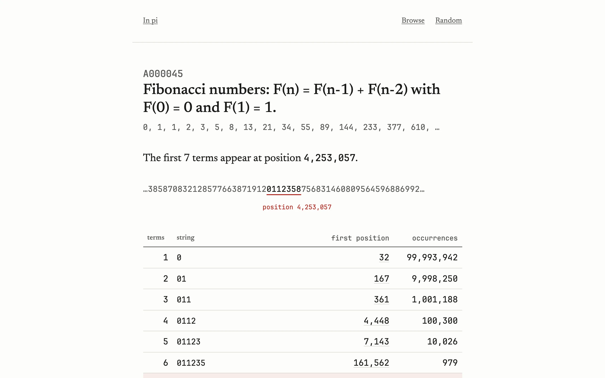

- Type an OEIS A-number, a sequence name, a few terms, or a string of digits, and the site tells you how far into pi you have to go before the first \(k\) terms appear.
- The search covers the first 1,000,000,000 digits and strings up to 12 digits long.
- playoeis-pi-search.seanre.id
- sourcegithub.com/sean-reid/oeis-pi-search